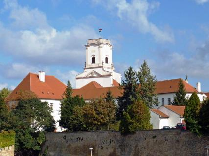
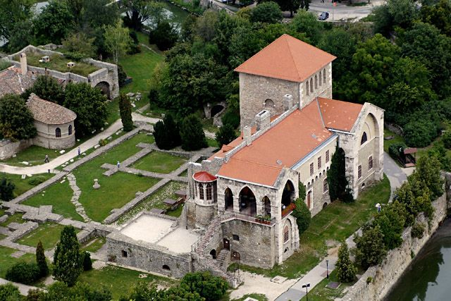
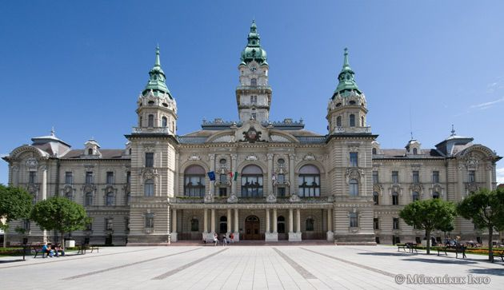
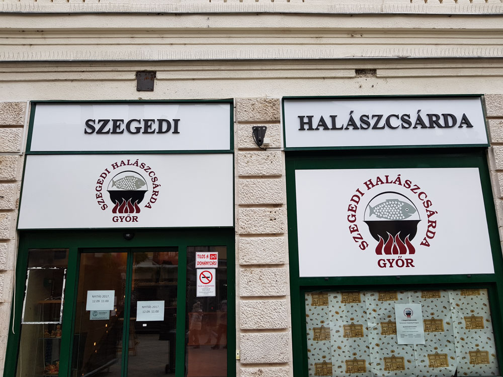

Biskupský palác je impozantní historická budova, která sloužila jako rezidence pro biskupy a představitele církve.
Hrad v Győru, postavený ve středověku, je významnou historickou památkou a nabízí krásný výhled na město.
Városháza je krásná historická budova s bohatou architekturou a zajímavými výstavami.
Tato restaurace je známá svým vynikajícím gulášem a tradiční maďarskou kuchyní.
